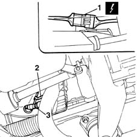

1080B60 LAMBDA SENSOR - R.R.
- Path
- Procedures > 10 ENGINE UNIT > 1080 EXHAUST EMISSION CONTROL SYSTEM > 1080B exhaust emission control system > 1080B60 LAMBDA SENSOR - R.R.
- Kind
- repair procedure (removal / refitting; the operation number is the code)
- Applies to
- engines: 1.6 16v; all production periods
- Interactive page
- https://sloeber94.github.io/elrnDB-fMltpl/en/#/2891297
Applies to: engines: 1.6 16v; all production periods
 Removing
Removing
 Refitting
RefittingWith the ignition key in the OFF position, disconnect the battery negative terminal.
Place the car on a ramp.
1. Disconnect the electrical connection for the Lambda sensor.
 | Name | Connector |
|---|---|---|
1 | Lambda sensor |
Release the lambda probe electric cables from the bands on the engine bulkhead.
Raise the car.
2. Release the lambda probe lead from the bracket.
3. Unscrew the lambda probe and remove from the exhuast pipe.

Applies to: engines: 1.6 16v; all production periods
Refitting
RemovingCheck the condition and electrical continuity of the lambda probe.
Screw the lambda probe onto the exhaust pipe. Tighten to the specified torque.
 | Fastening | Component | Ø | Value (daNm) |
|---|---|---|---|---|
- | - | LAMBDA PROBE | M18 x 1.5 | 4.8 |
Fit the electrical wiring into its seat.
Lower the lift.
Connect the electrical connector.
Secure the wiring to the bulkhead.
Remove the vehicle from the ramp.